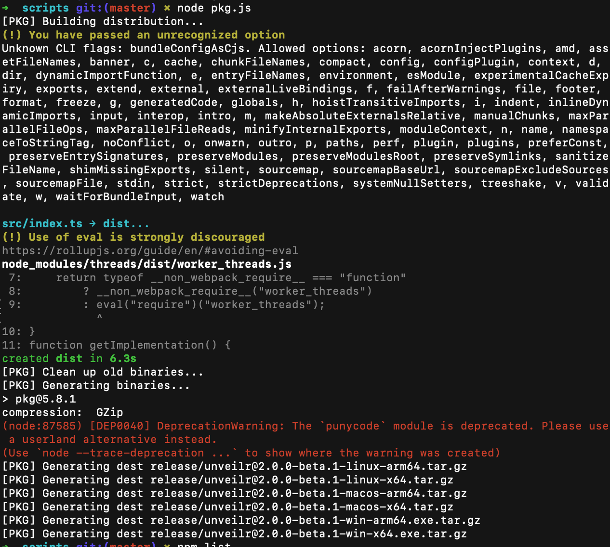
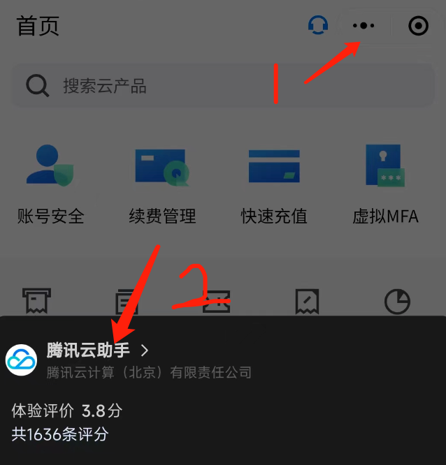
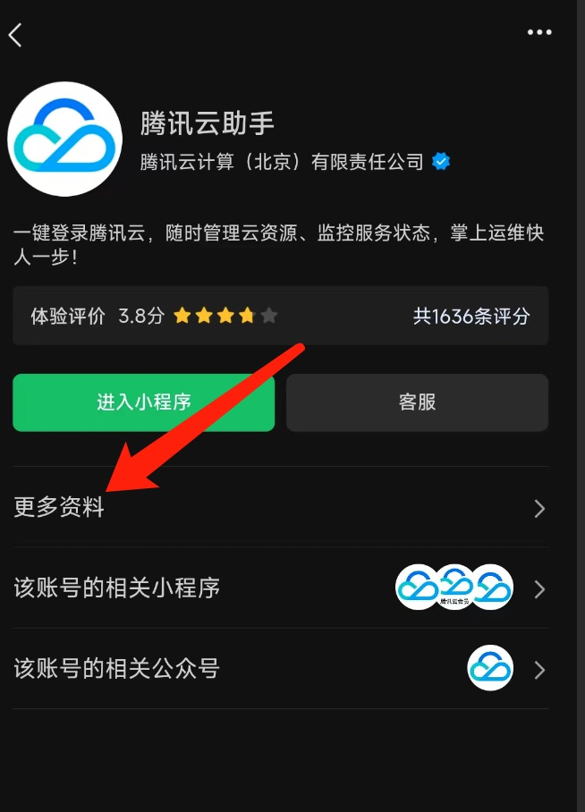
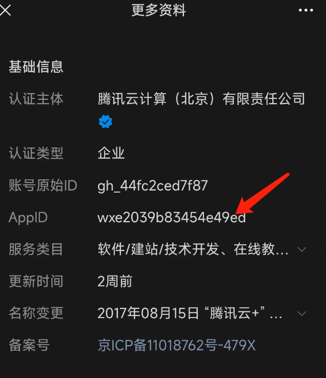
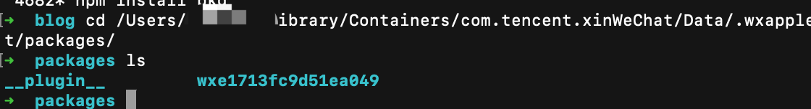

微信小程序反编译 for Mac
上次更新: 2024-07-08 23:45:32
微信小程序解包 for Mac
1.工具
#微信版本>3.8.0
#小程序包路径
/Users/<你的用户名>/Library/Containers/com.tencent.xinWeChat/Data/.wxapplet/packages/
#解包工具
git clone https://gitclone.com/github.com/RecoveryAshes/unveilr.git
#个人目前版本
node=v22.4.0
yarn=1.22.22
npm=10.8.1
npm list
unveilr@2.0.0-beta.1 /Users/lehaoxu/Desktop/temp/unveilr
├── @babel/core@7.21.4
├── @rollup/plugin-commonjs@24.0.1
├── @rollup/plugin-json@6.0.0
├── @rollup/plugin-node-resolve@15.0.1
├── @types/babel__core@7.20.0
├── @types/babel__traverse@7.18.3
├── @types/crypto-js@4.1.1
├── @types/css-tree@2.3.1
├── @types/node@18.15.5
├── @types/prettier@2.7.2
├── @types/shelljs@0.8.11
├── @typescript-eslint/eslint-plugin@5.57.0
├── @typescript-eslint/parser@5.57.1
├── chalk@4.1.2
├── commander@10.0.0
├── compressing@1.8.0
├── crypto-js@4.1.1
├── css-tree@2.3.1
├── eslint@8.22.0
├── observable-fns@0.6.1
├── pkg@5.8.1
├── prettier@2.8.7
├── punycode@2.3.1
├── rollup-plugin-clear@2.0.7
├── rollup-plugin-license@3.0.1
├── rollup-plugin-terser@7.0.2
├── rollup-plugin-typescript2@0.34.1
├── rollup@2.79.1
├── shelljs@0.8.5
├── threads@1.7.0
├── ts-node-dev@2.0.0
├── tsconfig-paths@4.2.0
├── typescript@5.0.2
└── winston@3.8.2
2.工具编译
brew install node
brew install yarn
cd unveilr/scripts
npm install rollup@'^2.0.0'
npm install pkg
npm install punycode
node pkg.js等待结束

cd release
#解压
tar -xzvf <需要的压缩包>3.unveilr使用
1.📝参数详解
- 子命令是为了后续集成别的平台小程序解包功能 (其他小程序反编译方案收集)
- 子命令默认为
wx
| 子命令 | 参数 | 解释 |
|---|---|---|
global |
-l, --log-level <level> |
设置日志等级 debug，info，warn，error 默认 info |
wx |
<packages...> |
wxapkg的路径，可以是多个，也可以是一个目录 |
wx |
-i, --appid <appid> |
解密windows上的 wxapkg时需要提供🔥已经支持自动从路径中提取 |
wx |
-f, --format |
是否需要格式化解析出来的代码 |
wx |
--no-clear-decompile |
不清除反编译时的残留文件 |
wx |
--no-clear-save |
不清除之前的编译结果 |
wx |
--no-parse |
只提取wxapkg中的文件，不进行反编译 |
wx |
-d, --depth <depth> |
设置从目录中查找wxapkg的深度默认: 1 设置为0时不限制深度 |
wx |
-o, --output <path> |
设置反编译输出路径 |
2.💡使用示例
# 直接解包整个目录
$ unveilr /path/to/wxapkg/dir/
# 解包多个包
$ unveilr /path/to/1.wxapkg /path/to/2.wxapkg ...
# 指定子命令并指定微信AppId
$ unveilr wx /path/to/wxapkg/dir/ -i wx11aa22bb33cc44dd
# 格式化解析出来的代码
$ unveilr wx /path/to/wxapkg/dir/ -f
# 只提取源文件不解析进行反编译
$ unveilr wx /path/to/wxapkg/dir/ --no-parse4.反编译小程序
1.小程序包路径
找到小程序AppID(只能手机看)


AppID

到该目录

cd /Users/<用户名>/Library/Containers/com.tencent.xinWeChat/Data/.wxapplet/packages/
cd wxe1713fc9d51ea049/24 #进入小程序包目录
ls
__APP__ _pages_common_.wxapkg _pages_template_.wxapkg
__APP__.wxapkg _pages_one_.wxapkg
pwd
/Users/<用户名>/Library/Containers/com.tencent.xinWeChat/Data/.wxapplet/packages/wxe1713fc9d51ea049/242.反编译
使用刚编译解压的脚本
./unveilr@2.0.0-beta.1-macos-x64 /Users/<用户名>/Library/Containers/com.tencent.xinWeChat/Data/.wxapplet/packages/wxe1713fc9d51ea049/24/__APP__.wxapkg
#反编译后的文件默认位置在
# /Users/<用户名>/Library/Containers/com.tencent.xinWeChat/Data/.wxapplet/packages/wxe1713fc9d51ea049/24/5.问题
1.微信开发者工具运行反编译代码报错
格式化问题
加上 -f 参数可初步格式化代码，如果还有报错想办法格式化代码，或根据报错信息手动格式化代码。
RecoveryAshes Blog